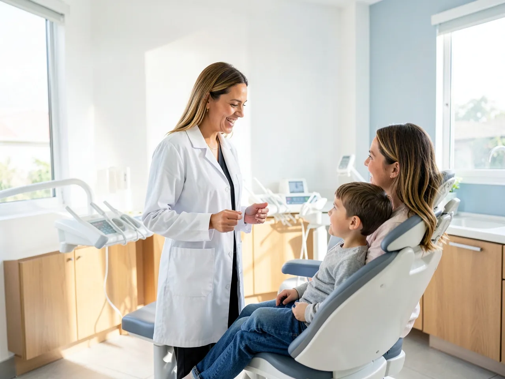
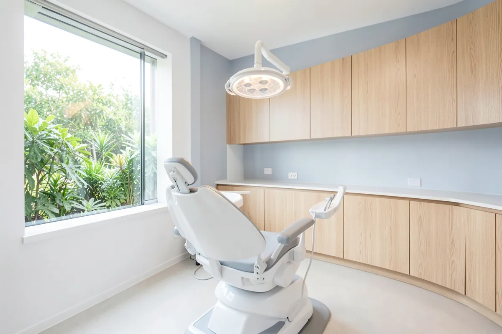
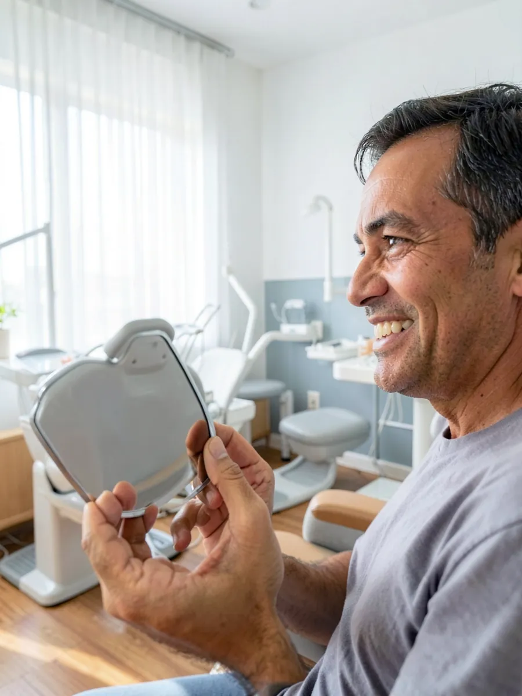

Dentista de confiança para a família inteira
Da primeira consulta do seu filho ao implante dos avós, a {{nome_curto}} cuida de cada sorriso com calma, explicação clara e horário marcado.
{{nota}} no Google, {{avaliacoes}} avaliaçõesAtendimento em {{bairro}}

Está com dor?Fale com a gente agora e veja o primeiro horário livre.
Falar sobre urgênciaO que te trouxe aqui?
Escolha pelo que você sente ou quer resolver. O tratamento certo é definido na avaliação.
Faz tempo que não vou ao dentista
Clínica geral e limpezaCheck-up, limpeza, restaurações e orientação para manter os dentes saudáveis.
AgendarMeus dentes estão tortos
OrtodontiaAparelho fixo ou alinhadores, com plano e manutenção acompanhados de perto.
AgendarPerdi um ou mais dentes
Implantes e prótesesSoluções fixas ou removíveis para voltar a mastigar e sorrir com segurança.
AgendarQuero dentes mais brancos
ClareamentoClareamento de consultório ou caseiro supervisionado, depois de avaliar a saúde dos dentes.
AgendarSinto dor ou sensibilidade
Tratamento de canal e restauraçõesDiagnóstico da causa e tratamento para aliviar a dor e salvar o dente sempre que possível.
AgendarMinha gengiva sangra
PeriodontiaCuidado com a gengiva e com o osso que sustenta os dentes, com acompanhamento.
Agendar
Criança no dentista sem choro
A primeira visita pode ser assim que nascem os primeiros dentes. Quanto mais cedo, mais tranquila a relação da criança com o dentista.
- Consulta com tempo para a criança conhecer a cadeira e os instrumentos
- Orientação para os pais sobre escovação, alimentação e chupeta
- Aplicação de flúor e selantes para prevenir cáries
Como é a primeira consulta
Sem surpresas: você sai sabendo o que precisa ser feito, em que ordem e o porquê.
Conversa
Você conta o que incomoda e o que espera. Perguntamos também sobre saúde e medicamentos.
Exame
Avaliação de dentes, gengiva e mordida, com radiografia quando for necessário.
Plano de tratamento
Você recebe o que precisa ser feito, por prioridade, com prazos e formas de pagamento explicados.
Nosso consultório




Esterilização
Instrumentos esterilizados e materiais descartáveis em cada atendimento.
Explicação clara
Tudo é explicado antes de começar, sem termos difíceis.
Horário respeitado
Agenda organizada para você não perder o dia esperando.
{{responsavel}}Responsável técnico, {{registro}}
Dúvidas frequentes
Não achou a sua? Pergunte pelo WhatsApp.
Vocês atendem convênio?
Pergunte pelo WhatsApp quais convênios são aceitos hoje. Também atendemos particular, com formas de pagamento facilitadas.
Dá para parcelar o tratamento?
As formas de pagamento são apresentadas junto com o plano de tratamento, depois da avaliação.
Atendem urgência?
Em caso de dor, fale pelo WhatsApp {{whatsapp_fmt}}. Encaixamos no primeiro horário possível.
Com que idade levar a criança ao dentista?
A recomendação é a primeira consulta assim que nascem os primeiros dentes, ou até o primeiro ano de vida.
De quanto em quanto tempo devo fazer limpeza?
Na maioria dos casos, a cada seis meses. O intervalo certo para você é indicado na consulta.
Marque sua consulta
Responda pelo WhatsApp e escolha o melhor horário.
- {{whatsapp_fmt}}
- Endereço
- {{endereco_completo}}
- Horário
- {{horario}}
- @{{instagram}}